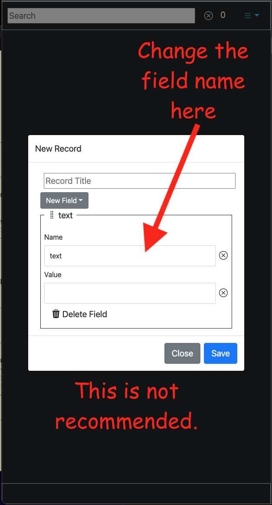
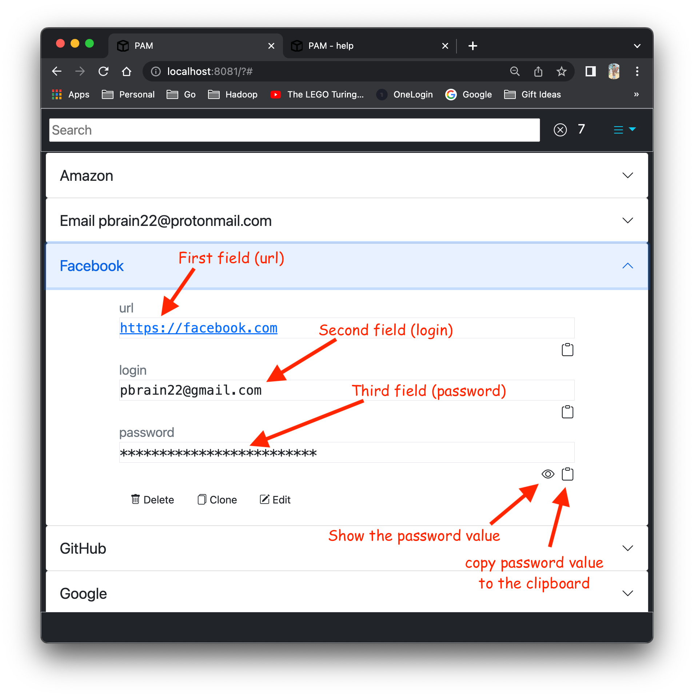
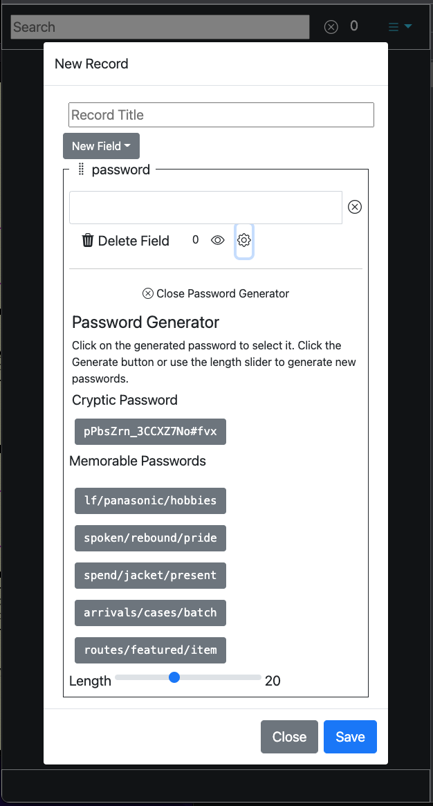
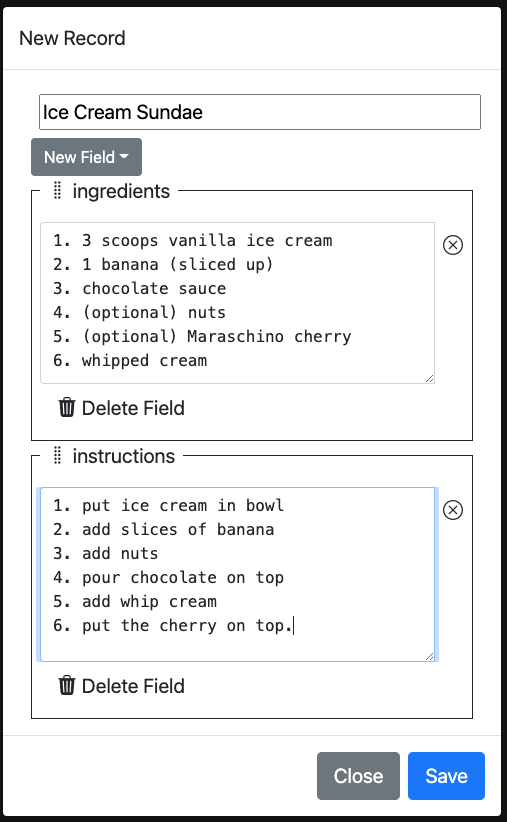
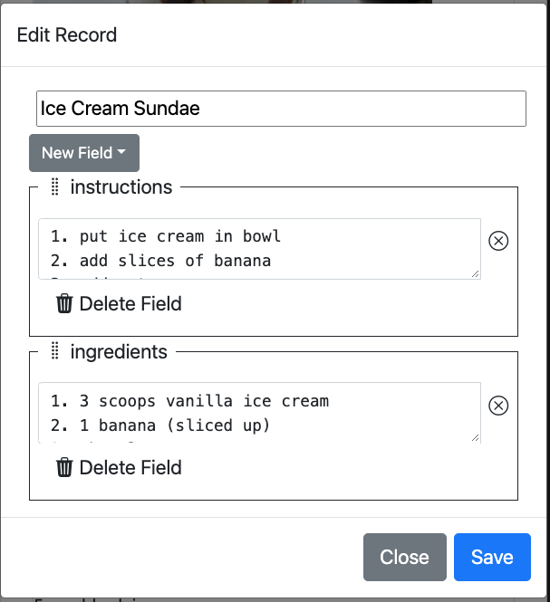
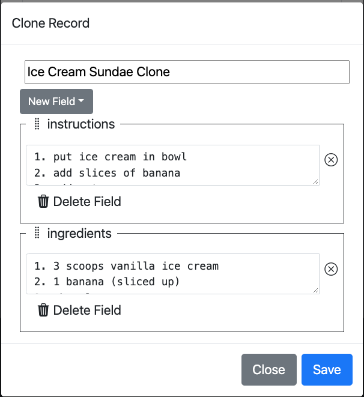

WARNING! This document is not complete.
The meta data in the table is populated during the build process when the on-line help is generated.
| Field | Value |
|---|---|
| Author | Joe Linoff |
| Copyright (©) | 2022 |
| License | MIT Open Source |
| Version | 1.0.0-alpha01 |
| Build | 2022-05-30 09:16:41 -0700 |
| GitCommitId | 0f03031 |
| GitBranch | main |
| project | https://github.com/jlinoff/pam |
| webapp | https://jlinoff.github.io/pam/www/ |
| help | https://jlinoff.github.io/pam/www/help/index.html |
PAM or Personal Account Manager is a free and open source single page web application that runs in your browser in a secure context that enables you to securely manage your confidential personal account data as searchable records in a secure, flexible, and persistent manner without ever having to visit a server because it stores the data in a file that you control. The file is encrypted so even if it were stolen the data would be safe if the password you used to encrypt it was strong.
You can run the application locally, from your own server or from the public github.io server here.
See the Security Considerations and Reasons to consider using PAM sections below if you are interested in what motivated me to write PAM.
PAM is a pretty simple application. I think of it as a record editor that runs in your browser that allows you create records with interesting information that can then be stored and retrieved in a secure way.
It is very reasonable to ask yourself why, if PAM is like an editor, you can’t simply just use something like an Excel spreadsheet or a text file editor or keep passwords on sheets of paper or use one of the many commercially available password managers?
That is an excellent question. The answer is that you can and, if you are already using an Excel spreadsheet or a text file editor or a sheet of paper or a password management service or anything other method that works well for you, you should.
Even if you do not already have a method for managing passwords PAM may not be the right choice. PAM requires that you understand a bit about HTML input and textarea elements which may be confusing. Also the PAM user interface (UI) and record data model may be confusing or hard to understand and use because I am not a UI programmer.
The bottom line is that I wrote PAM to provide some features I wanted and to address some concerns I had with existing approaches. Those features and concerns are discussed in the next section to help you understand my reasoning so that you can decide whether any of them are important to you. If you don’t care about the features and the concerns that bother me, there is no reason to use this tool.
As mentioned in the previous section, I wrote PAM provide some features I wanted and to address some concerns I had with existing approaches. This section lists those concerns and features in the each of reasons presented below.
PAM is a single page web application (SPA) that has no backend which means that it never communicates information with an external site. This makes it safe from some cyber attacks as detailed in the Security Considerations section.
In PAM, information is organized into files composed of records that each have a unique title and are, in turn, composed of fields that each field have a name, a type and a value. This approach is similar to organizing information using recipe cards or a rolodex.
Following the recipe card analogy a little further, we can say that each recipe is a single record, a collection of recipes for desserts would be a file of dessert recipe records where each record or recipe had three sections or fields: a title (the name of the recipe), the ingredients and the instructions. This is what a recipe record might look like in PAM.
As you can see, in this recipe record, the record title is
"Ice Cream Sundae" and the two fields ingredients
and instructions
contain the multiline (textarea)
descriptions of what the ingredients and instructions are for this
specific recipe.
On the other hand a record for an account might have the url, the login name and the password. Something like this:

In the acount example above, the record title is
"Google", the url field value is
"https://google.com", the login field value is
"pbrain81@gmail.com" and the password value is hidden.
As you can see both records look quite different. Recipes records
have fields for ingredients
and instructions
whereas
account records have fields for the url
, login
and
password
.
You could easily imagine defining other records that contain
information for other topics like books read
or
unidentified aerial phenomena
or bird
watching
which would undoubtedly require additional, different
fields.
This demonstrates why PAM was organized around the notion of records that are composed of flexible, user defined fields. In my view, the record/field structure does a better job of representing this type of topic data than a spreadsheet or a text file editor.
If the number of records plan to store is large like 10,000 recipes or address information for mailing list, you probably want to use a database not PAM.
PAM is great for small collections not gargantuan ones. I never store more than about 150 records which is probably a reasonable upper bound but, in practice, PAM does not impose any limits.
PAM allows you to search records by their title or their field names and values to filter out records that do not match the search pattern. This is extremely useful when the number of records grows.
See Search Records for more details.
I always find it hard to come up with passwords in the spur of the moment.
Fortunately, PAM provides an automatic password generation capability that I find really useful. Of course almost all browsers do this as well these days, but they generate cryptic, hard to memorize passwords which is perfectly fine if you never have to remember them but if you want a more memorable password, you are out of luck.
PAM gives you a choice because it has the concept of cryptic and memorable passwords as discussed in detail in Password Fields section.
PAM uses files to load and store the record data.
Using a file means that the user does not have to rely on the cybersecurity defenses of a company running a web server at their site or another third party site.
A PAM file is composed of a set of records. Any records you
like. You can use a single file for all of your records or you can have
multiple files where each file contains records that are somehow related
like records of recipes
or book reviews
or my favorite species of Euglena
.
For a discussion about how the user controls the organization of the records and fields in a file see the Reason 2: Record Model sectionof this document.
I store my record files in cloud IaaS storage (infrastructure as a service) and mount that storage as a local volume on each device so that the files look like they are local but they are, in fact, stored in the cloud. That allows me to access the files from any of my devices: laptops, phones and tablets.
I personally use iCloud because it does all the volume mount work automatically on all of my devices.
The record fields are fully customizable. The advantage of using a record model to represent the data was discussed earlier (in reason 2) but being able to change the basic building blocks of the record (the record fields) extends the advantage of this approach.
For more information on fields see the Fields section.
PAM provides a set of pre-defined record fields in the Preferences but you can tailor them to your needs as shown below.

You can also change the names of the pre-defined fields when creating a new record. They are only provided for convenience.

Records are encrypted using an NIST certified, strong, well defined,
standard symmetric encryption algorithm: AES-256-CBC. That
means, if a file is stolen, the record data is safe, if it has been
encrypted with a strong password.
As an added benefit, note that AES-256-CBC is thought to
be reasonably resistant to quantum attacks as discussed in the
literature. Here
is one relevant exchange from a crypto.stackexchange.com
discussion.
PAM encryption and decryption operations are provided by and run in the browser using the secure context of the browser. This is the same context used for accessing sites securely for transactions, like your bank.
The security of the secure context operations is taken very seriously by organizations that develop Chrome, Edge, Firefox and other browsers.
You can read more about secure contexts here.
Passwords and other secrets are automatically hidden on the screen (displayed as asterisks) so that someone looking over your shoulder cannot read them unless you choose to make them visible.
This is the default hidden view of a password.

This is the view of a password when it is not hidden.

The files can be accessed from mobile devices so the user has access to the records anywhere. In addition it uses bootstrap-5 to make it work better in mobile browsers.
Last but not least, one the more compelling reasons to try PAM is that it is free and open source software (FOSS). You can try it and use it without any obligation or cost. You can also fix bugs or customize it yourself.
PAM is a simple single page web application (SPA). It consists of three basic parts: the menu and search section, the records section and the status section.
It looks something like this

The top section that contains a search input and a menu.
The search input is used to find records that match the input to make them easier to find.
The menu at the top right is the control center for the application it has a number of options as you can see below.

Underneath the top level bar is the records section. Each record is
shown as entry that is displayed by its title. If you click or tap on
it, it will expand. This is called an accordion display and is shown
below with the Facebook
entry expanded.

As you can see the expanded Facebook
record has three fields:
url
, login
and password
.

You can copy the field values to the clipboard so that they can be pasted into login forms. The copy works for passwords whether the password is visible or not.
You also delete, clone or edit the records:

You can also click or tap on the title of the opened record to close it.
Below the records section is the section where ephemeral status messages are displayed (they disappear after about 1.5 seconds).
The status messages are used to provide activity feedback like showing how many bytes were copied to a clipboard when a copy button is clicked or tapped as shown in the example below.
You can control the duration of the messages in the preferences.
The following sections will go over the basic functions that PAM provides.
In a nutshell they are:
Each function will be discussed in a separate subsection.
Note that Preferences were not included because they have their own top level section in this document.
Click or tap on the About
menu entry to get information about
PAM. You can even add custom HTML through the preferences.
Here is a screen shot of what you would see.
Here is the annotated view

Here is an about dialogue with custom message.

Custom messages are defined in preferences as follows.

This is a long section because it covers a number of concepts that are needed by other sections like topic and fields.
Creating a record is a very common activity in PAM so I tried to make it as easy as possible.
There are three ways to create record:
New Recordmenu option,
All three approaches will be discussed here with examples.
Creating the record by clicking or tapping the New Record
menu
option in the application is probably the best way to create the first
new record for a topic family. This is also known as the menu
approach.
Creating a record by cloning an existing record in the application is
useful when you want to use the same fields as the existing record. It
is a great way to guarantee uniformity. Although if the number of fields
is small using the menu
approach is also fine.
Creating a record by editing javascript is most useful if you are interested in creating record programmatically (perhaps a subset of accounts that shared with a small group of users).
Before any of the creation approaches can be discussed it is very important to understands record topics and record fields to provide background information for understanding some of the terms.
Topics are a way of organizing records that have similar fields.
Topics are arbitrary. For example, a topic could be something like
recipes
, accounts
, or unidentified aerial
phenomena
.
One way to use topics is to define a file all records in that topic.
For example you could have a
file for all
of your recipe records or you could put all of your records,
irregardless of topic, into a single file like
recipe.pam
.mystuff.pam
Records are composed of fields. Before creating a new record make sure that you know exactly what fields you want to use but before you can do that you need to understand how they are defined.
Each field has a name, a type and a value.
To keep things simple, I decided to bind the field name and type so
that the field name unambiguously defines the type. That means that a
field like "login" is always a "text" field.
It will never be a phone number or a date.
Fields are defined in Preferences and they are stored in each file with the along with the records. Here is what they are by default.
You can change them at any time. Because the fields are stored in each file they can be different for each topic file, if you choose to organize things that way.
PAM is very flexible so it doesn’t impose any strict rules on the fields. Thus, you can also change the names of the pre-defined fields when creating a new record. They are only provided for convenience.
The field types are based on HTML element input types and that is, in fact, how they are presented to the user in the preferences dialogue. Here is a brief overview of the types and when to use them. You can search the web for more details.
| Type | Usage |
|---|---|
| datetime-local | A datetime text string. A typical usage might be the date that you finished reading a book. |
| An email text string. A typical usage might be the email address of a contact. | |
| number | A numeric text string. A typical usage might be a measurement like height or width or any other numeric value. |
| password | A secret text string that is normally displayed as asterisks
(****) with an eye
( |
| phone | A phone number text string. A typical usage might be a mobile phone number. |
| text | A string, like a name or keyword. A typical usage might be a login name. |
| textarea | A multi-line text box. A typical usage might be a note or a list of recipe ingredients. Note that this is not strictly speaking an HTML input element type, it is a separate element. It is treated as an input type here for convenience. |
| url | A text string that is a uniform resource locator (URL). A typical usage might be the path to an account like https://google.com |
Remember that the types were not made up by me, they were taken directly from input element description here, the separate textarea element is described here.
It is oftentimes the case that all of the types are not needed. This is especially true for well cases where you have a very clear understanding record field requirements. If that is the case you might want to use the preferences to delete fields that are not relevant for your usage (you can always add them back later if you want).
Here is an example that shows a recipe record with ingredients
and instructions
fields.
Here is an example that shows an account record with url
,
login
and password
fields.
Passwords fields show up in a lot of places. I chose to document them here because you will probably first encounter them when creating a record.
Password fields are a special case for the following three reasons.
First, they provide a generator that allows you to automatically create passwords at the click or tap of a button. For information about preferences that can be used to customize password generation see Password Preferences
Second, they always hide the value so that it can be seen by someone observing your screen.
And, finally, because they provide the ability to generate two different types of passwords: cryptic and memorable.
Cryptic passwords consist of letters, digits and special characters in a single string.
Here is an example: 'N5yAb!XfGa3vELPsK95K4/AAz8mts'.
Cryptic passwords tend to be hard to memorize for most people.
Memorable passwords are composed of lower case English words with an optional prefix, an optional separator between each word and an optional suffix.
Here is an example: 'rebates/restructuring/jamaica'.
Memorable passwords tend to be easier to memorize than cryptic passwords for most people.
Here is an example that shows a password in its standard hidden form.
To make the password visible, click or tap on the
 icon.
icon.
Here is an example that shows a password in its visible hidden form.

To hide the password, click or tap on the
 icon.
icon.
This is what the password field dialogue looks like with no generator.

When you click or tap on the
 icon, cryptic and
memorable passwords are generated and the password generator dialogue
appears.
icon, cryptic and
memorable passwords are generated and the password generator dialogue
appears.

As you can see it always generates five memorable passwords to provide some choices. I found that more useful than the original implementation which only had a single choice. The decision to present 5 was arbitrary but it seems to work well enough for my needs.
This is what the password generator looks like with annotations.

If you click or tap on the
 icon a second time, new
passwords will be generated. You must click or tap on the
icon a second time, new
passwords will be generated. You must click or tap on the
 icon to close the
dialogue. I chose this non-intuitive approach was chosen because I
wanted the
icon to close the
dialogue. I chose this non-intuitive approach was chosen because I
wanted the  icon to be
used to generate new passwords. That may not have been the most
intuitive way to implement it but it works well enough.
icon to be
used to generate new passwords. That may not have been the most
intuitive way to implement it but it works well enough.
To choose a password simply click or tap on it and it will be added to the field value.
Click or tap on the "New Record" option from the
menu.

That will popup a dialogue that looks like this.

You can now type in the record title.
From there you click or tap on the "Type" pulldown to
select and create the first record field. Don’t worry if you select the
wrong one, they are easy to delete.
For this example we will choose note
because it is a
textarea
field and then rename it to ingredients
and type
in some basic ingredients in the value input.
Here is where you select note
for the first field.

And then change the field name to ingredients
and populate
it.

Now do the same thing to create a instructions
field. Remember
to choose note
just like in the previous step. This is what it
looks like after you have added the second field.

One interesting thing to note is that you can change the order of the fields by dragging them up or down. To do that select the field title at the top of the box (fieldset) and move it. Here is what it looks like when i dragged instructions up.

I then dragged instructions back down because it should appear after ingredients.
When you are finished click or tap on the "Save" button
to save it and you will see it show up as a new record.

You can click or tap on the record to expand it and see the fields you just defined.
Cloning a record is simple. Just expand the record and click or tap on the clone button and an edit dialogue pops up.
Using the record that was created in the previous section here is
what happens when you click or tap the "Clone" button.

At this point you would typically change the title and field values but for this demonstration will not do anything. PAM makes sure that the title is unique so it can be saved.
Click or tap the "Save" button and you will see
this.

As you can see, PAM still remembers that you had the
original record open. That is so that it is easy to continue clicking or
tapping the "Clone" button to create more records. In this
case we only care about one record so you can click or tap on the new
record to expand it.

This approach is not going to have any screenshots because it deals with PAM internals and may change from time to time. Instead a set of instructions is provided that should allows you to figure it out pretty easily.
recordssection of the file and use that as a template to create more records.
The reason that this has to be done without a password is because I
have not yet written a command line utility to encrypt/decrypt the
files. It should be straightforward to do because it uses the standard
"AWS_256-CBC" algorithm.
To edit a record, select it from the records list and click or tap on
the "Edit" button to popup the edit dialogue which is
exactly the same as the dialogue used to create record.
In fact, it is implemented using the same code so you can use the instructions from the Create Record section to change or add new fields.
To delete a record, select it from the records list and click or tap
on the "Delete" button.
Beware that PAM trusts you and will not ask you if you really want to delete the record, it will just go ahead and do it so be careful.
To clone a record, select it from the records list and click or tap
on the "Clone" button. This will create a new record that
you can edit.
The clone operation is described in detail in the Create Record section.
To save records and preferences to a file by choose the
option from the menu. See the Menu section
to see screenshots. Save
File
Save
File
If you want the records encrypted, enter or generate a password. Make sure that you do not forget this password. It is the master password this is used to unlock all of the records and PAM does not keep track of it. That means that if the password is lost, PAM cannot recover the data it is lost forever.
Encryption is done using the "AWS-CBC-256" encryption
algorithm which is known to be secure (even to quantum attacks) but it
means that you must remember it because the file records cannot be
retrieved if the password is lost.
If you do not enter a password, the output will javascript which can be read by anyone. It is NOT secure. If you have records with passwords ALWAYS use a password unless you understand the consquences. This can sometimes be convenient because it allows you to see how the PAM data is organized which can aid automation.
To load records and preferences to a file by choose the
option from the menu. See the Menu section
to see screenshots. Load
File
Load
File
If the file was saved with a password, you must enter that password or the file will not load.
PAM allows you to search records by their title or their field names and values to filter out records that do not match the search pattern. This is extremely useful when the number of records grows.
The search function supports case insensitive searches and regular expressions to make it easier to find stuff.
I use this a lot for finding things like where i am still using old passwords and obsolete accounts or even something like all of the recipes that reference vanilla ice cream.
Here is an made up list of accounts:

Here is the same list after filtering for those whose titles contain
the letter "g".

To filter only those that start with "g" you would use
this regular expression search term instead: "^g".
For more information about regular expression syntax see the documentation for Javascript Regular Expressions.
To get this help message, choose the "Help" option from
the menu.
If you find a bug or want to request a change or submit an improvement, got Metadata section at the top of file click or tap on the project link.
The menu is the control center for the app. It provides the basic operations for creating records, loading records, saving them and it provide information about the app including this help.
Note that much of this material has been discussed in earlier sections but having it consolidated here might be helpful. Plus there are links to the sections with relevant details.
This is what the menu looks like.

As you can see, there are seven menu options: About
,
Preferences
, New Record
, Clear Records
, Load
File
, Save File
, and Help
.
Click or tap on the
entry to see information about the app. See the About section for more details. About
About
Click or tap on the
entry to see the preferences dialogue which allows you to customize some
of the app behavior. There is a lot of stuff so you might want to read
the Preferences section before trying it. Preferences
Preferences
Click or tap on the
entry to create a new record. See the Create Record section for more details. New
Record
New
Record
Click or tap on the
entry to delete all of the records. This is useful for times
when you want to create a new collection of records that is saved in a
separate file. For example, if you wanted to create a collection
personal accounts in one file and a collection shared accounts for a
group of folks (like a development team sharing AWS accounts). Clear
Records
Clear
Records
Click or tap on the
entry to load a records file. See the Load
File section for more details. Load
File
Load
File
Click or tap on the
entry to save all of the records to a file. See the Save File section for more details. Save
File
Save
File
Click or tap on the
entry to see this help message. Help
Help
At the top of the screen is the search bar and, at the far right, the menu.
At the bottom of the screen is a status bar that shows status messages.
This section talks about how records are presented in PAM
using an example with seven records that contain confidential
information for Amazon
, Email
, Facebook
,
Github
, Google
, Netflix
and Stack Exchange
fictional accounts.
See the Create Record section for details about how to create records.
We start with the unexpanded view of all records as shown below.

As you can see PAM presents the records as an accordion. Each record is one entry in the accordion that you can expand to view the record fields or delete, clone or edit edit the record.
To get the information for an account you click or tap the button.
At the top of the screen is the search bar and, at the far right, the menu.
At the bottom of the screen is a status bar that shows status messages.
Once you click on or tap a record it expands as shown below where the
Facebook
record was tapped.

You can see that there are three fields in the record: url
,
login
and password
, next to each field there is a icon
that looks like a clipboard
 . If
you click or tap it the field contents will be copied to the clipboard
so that you can paste them into a login dialogue.
. If
you click or tap it the field contents will be copied to the clipboard
so that you can paste them into a login dialogue.
Note that the fields are completely customizable. You can have as many as you want. Fields are added, modified and deleted by the
Editoption.
In addition to the cliboard icon there is another icon that looks
like an eye  .
that shows up for password field. If you click or tap it, the password
will be shown in plaintext and the icon will change to an eye with a
slash through it
.
that shows up for password field. If you click or tap it, the password
will be shown in plaintext and the icon will change to an eye with a
slash through it
 . By
default all passwords are hidden so that they are not visible to casual
observers. Click or tap it again to re-hide the password.
. By
default all passwords are hidden so that they are not visible to casual
observers. Click or tap it again to re-hide the password.
In addition there are three buttons at the bottom
to delete
the record,
 Delete
Delete
to clone
the record and
 Clone
Clone
to
edit the record fields. Edit
Edit
Preferences allow you to customized the behavior of the app. The defaults are set so that most people will never have to change anything.
The preferences dialogue is a big one. It is broken into 4 sections:
Each preference is discussed in more detail in the subsections below.
These preferences control search options.
If enabled, all searches are case insensitive, otherwise they are case sensitive.
The default is enabled.
If enabled, all searches look at the record titles, otherwise they do not.
The default is enabled.
If enabled, all searches look at the record field names, otherwise they do not.
The default is not enabled.
You would want to enable this you wanted to see records that contained a specific field.
If enabled, all searches look at the record field values, otherwise they do not.
The default is not enabled.
You would want to enable this you wanted to see records that contained a specific field value like an obsolete email or really old password.
These preferences control automatic password creation.
For more information about passwords see Password Fields
Defines the minimum length of generated cryptic and memorable passwords.
The default is 12.
I would recommend not making it shorter than the default unless a website specifically demands it because shorter passwords are easier to crack.
Defines the minimum length of generated cryptic and memorable passwords.
The default is 32.
I would recommend making it longer than the default if you can but many websites have an upper bound for the length of password. The chosen default seems to work for most of them.
Defines the minimum size of a word in a generated memorable password. > It has no affect on cryptic passwords.
The default is 2.
If you do not want short words like 'as' or
'it', then make this longer. I would not recommend making
it shorter.
The string used to separate the words in a generated memorable password.
It has no affect on cryptic passwords.
The default is a single character: '/'.
If you want to change the character, add any string that you like. It
can be multiple characters. Other reasonable choices might be
':' or '.' or '@@' or whatever
you like. It is best not to use letters.
The minimum number of words in a generated memorable password.
It has no affect on cryptic passwords.
The default is 3.
The maximum number of attempts to generate a memorable password that meets the specified criteria from the other password preferences.
It has no affect on cryptic passwords.
The default is 10000.
There is normally no need to ever change this but, if you change it and make it too small, PAM will report errors if it fails to generate passwords after the maximum number of tries.
The prefix to add to all generated memorable passwords.
The default is '' (empty string).
You might want to add a prefix or suffix to make sure that the generated passwords meet the requirements of websites that require upper case letter, digits and special characters.
For example, you might specify something like 'A1!!/' to
meet the criteria which might create passwords like
'A1!!/html/wishes/combined' or
'A1!!/rebates/restructuring/jamaica'.
The suffix to add to all generated memorable passwords.
The default is '' (empty string).
You might want to add a prefix or suffix to make sure that the generated passwords meet the requirements of websites that require upper case letter, digits and special characters.
For example, you might specify something like '/A1!!' to
meet the criteria which might create passwords like
'html/wishes/combined/A1!!' or
'rebates/restructuring/jamaica/A1!!'.
These are the preferences did’t fall into the other categories.
Log status messages to the console as well as the screen to aid debugging.
The default is false which says do not log status messages to the console.
You might want to enable console logging if you are debugging a problem and are working in a browser that supports debugging.
Clear all records before loading records from a file.
The default is true which says to clear the records before a loading new records from a file.
If you set this to false, another option titled Load Duplicate
Record Strategy
will appear that is not normally visible to ask you
with strategy you want to used for conflicts.
You might set this preference to false if you want to to merge sets of records from different files.
This preference is not visible unless the Clear Records On
Load
preference is false.
It presents three strategies for handling duplicate records during a
load operation: allow
, ignore
, replace
.
The allow
strategy allows duplicate records to exist by
cloning them. For example if a record with the title Google
exists in the records and in the file being loaded, the record from the
file would be renamed to Google Clone
.
The ignore
strategy ignores the duplicate record that is being
loaded. If there is a conflict it prefers the one already present.
The replace
strategy ignores the duplicate record that already
exists. If there is a conflict it prefers the record being loaded.
This preference specifies that all data is kept when cloning a record.
Remember that cloning a record is very simple and powerful way to create records with the same fields but you have to delete the existing values before entering new ones which is very simple.
The default is false which says to keep the field values when cloning.
Set this preference if you want to avoid deleting the fields manually.
Customized HTML that is added to the about page. It can be used in cases where the field records have been customized to provide an explanation or link to internal documentation.
These are the pre-defined record fields that are used when creating or editing records. They can be overridden.
PAM, like all web applications, has security challenges. By fully disclosing them here you can understand the challenges and improve your ability to protect your record data.
MITM refers to Monster In The Middle
attacks or, historically,
Man In The Middle
attacks. It an attack where a hostile
eavesdropper inserts themselves in the communications stream between a
client and a server to capture or alter the communications for nefarious
purposes like stealing credentials.
PAM is not susceptible to this attack because it does not communicate with a server. That is because it is a single page web application that is downloaded and run within your browser. All data is local. Nothing is ever transferred over the internet for an eavesdropper to capture.
Third party web site security can be a major source of cybersecurity vulnerabilities because clients cannot know how well such cybersecurity vulnerabilities are mitigated unless that site publishes a detailed report, on a periodic basis, of how often they were attacked successfully and how many attacks they have successfully fended off.
Sadly, most companies do not provide that information. If you are using a password manager or any other service that uses a server, you might want to consider asking them how vulnerable they are to cyberattacks. At a minimum, you will want to understand what is done to protect your data from insider attacks where an employee steals the data.
Sometimes you can get associated information about the security of a site by looking at Common Vulnerability and Exposures (CVE) reports. See https://www.cve.org/ for more information.
Poor reporting of third party web site cybersecurity vulnerabilities and exposures is what motivated me to write PAM.
Because PAM does not send the data to a server, it is not vulnerable to how cybersecurity is managed on the server by a third party.
You can verify that PAM is not sending data out by monitoring outbound traffic from your system. PAM never sends any outbound data.
Instead, encryption and decryption is run inside the browser using the secure context of the browser. This is the same context used for accessing sites securely for transactions, like your bank. The security of the secure context is taken very seriously by organizations that develop Chrome, Edge, Firefox and other browsers.
You can read more about secure contexts here.
Although it is not an attack vector per se, site reliability is another consideration when choosing a web application because a distributed denial of service (DDoS) attack on the site or a power failure at the site could make it unusable.
Fortunately, most modern web applications are built using commercial cloud software as a service (SaaS) products from vendors like Azure, GCP and AWS so they tend to be very reliable but it is still something to be aware of because if the site goes down so does the web application.
PAM, is hosted and served from github.io which also appears to be very reliable but if you are concerned, you can host it wherever you like. Also PAM does not do any backend server communication (as mentioned earlier) to it will like continue to run even if the site goes down temporarily because, once it is loaded, it will stay resident until you close the browser tab.
Another thing to consider is where you store your records file. I use iCloud which is also quite reliable and allows acess to iCloud files directly from computers mobile devices or tablets.
Just make sure that whichever infrastructure as a service (IaaS) offering you choose it is reliable as well because you don’t want to lose access to your file because the IaaS service is not available. Of course, you could simply load and save the data to a local file but that would restrict access to it from other devices (like mobile phones or tables) and you have to be very diligent about keeping it backed up.
The user enters the record data in decrypted form, so it may be vulnerable to over the shoulder surfing attacks where someone or something (like a camera) watches or films the user typing or opening a record and then clicking or tapping on a password field to display the password in plaintext which could allow that information to be stolen.
This vulnerability can be mitigated by being aware of your surroundings to make sure you are not being watched or filmed.
This is different and easier to mitigate than
key-logging and screen recordingas discussed in the next subsection.
If malware that takes screenshots or does key logging has been installed on your computer, phone or tablet, you are in trouble for a variety of reasons. It means that an attacker can see what you are doing and capture what you are typing.
The best way to mitigate these forms of attacks is to keep your system up to date by installing security patches and by using some sort of security tool or tools to protect your system.
Yet another type of vulnerability is the clipboard attack
if/when data is copied to the clipboard for cut and paste operations.
This vulnerability exists because the clipboard is a global resource
that can be accessed by other, independent applications.
Clipboard attacks can be mitigated by making sure that your computer does not have malware installed or by not copying to the clipboard. Although it is probably impractical to not use the clipboard at all so, if you do use the clipboard, make sure that you always reset it after any copy/paste operation to minimize any chances that it will be captured by malware or observed by an attacker. You can reset it by simply selection a single letter or word and copying it.
Another, perhaps better, way to mitigate the clipboard vulnerability would be to eliminate the need for the clipboard by modifying PAM to automatically login in for you based on record data using an HTTP POST operation but that is not currently available.
If you leave the browser unattended after you have loaded your record data, someone can sit down and see the records because they are impersonating you after you have logged in.
The best way to mitigate this attach is to always lock your screen when you leave the computer unattended.
Web site spoofing could be used to direct you to a website that could be used to steal your information using a look alike web application.
To mitigate that make sure that you accessing the PAM from a known, trusted site.
If you are concerned about this, you can always download, build and run PAM from your own site.
In summary, security can never be fully guaranteed, the best way to protect your data is to follow commonly recommended security practices:
A1/jeans/chosen/since/tuition?!!Several folks have asked me why Multi-Factor Authentication (MFA) was not included in PAM to provide and additional layer of security.
In general the MFA approach assumes that the users identity must be checked and validated (authentication) so that the site offering the services knows that it is dealing with the valid user not an impersonator which is a great thing but it is not necessary for PAM because PAM has no site. It is a single page web application which, once it is loaded, makes it more like a local word processor that is tailored to managing customized records in local files so any additional communication over the internet represents a risk as does storing any user information. Everything is done inside the browser in a secure context.
No outbound information is ever sent to the internet unless the user
specifically requests it via the Load File and
Save File operations but at that point all data is
encrypted both at the file level and as the HTTPS transport level which
is required for the browser secure context which, in turn, is required
by PAM to function which is pretty safe if you protect your
data with a strong password.
You can verify that PAM is functioning securely by monitoring outbound internet traffic. You should never see any outbound traffic from PAM that is not related to the file load and save operations.
The examples in this section talk about how to use this app under different scenarios.
This is the most common usage. It is where personal account records are stored so that you have a permanent, encrypted record of all of your passwords.
To create a file and a record follow these steps:
Add New Recordoption from the menu in the upper right hand corner.
Google email.
url,
loginand
password.
Save Filefrom the menu.
mystuff.pamor
joe.pamif your name is
Joe,
At this point your data is stored. You can add as many additional records as you want or change existing records. As long as you save them, they will be available to you.
To use the data to log into a site.
urllink so that the site opens up in a different tab.
To edit an existing record.
To delete an existing record.
This is a really powerful operation that allows you to quickly create records with the same fields.
To clone a record.
If you want to disable the copying of field data turn off the
Clone Field Values when Cloning Records
preference. That avoids
having to delete each old field value before typing in the new field
value.
This scenario assumes that a small group shares a common file of account records with credentials that can only be decrypted using a single shared password that is only known to the group. Because it is so easy to manage, such simple setup it might be useful for a small group that requires administrative access to a small number of accounts.
Because it involves sharing a password, this approach may be too insecure for some.
If this approach is adopted, it would be wise to change the shared password frequently, to audit all access to the shared file as well as auditing all access to the accounts. Also, since the shared file must be on a mounted volume that can be seen by the input file dialogue, access to the mount and, by extension, to the file can also be restricted.
Here are the high level steps necessary to share the pam file.
login,
password, note and host by
editing the preferences and removing the other fields since these
records have a specific format.This is a bit of contrived example because you could easily keep all of your recipes with your other personal account data but it might be useful if you want to keep them separated.
The key notion here is the idea of creating two new fields in the
preference dialogue: difficulty
, ingredients
and
steps
, and then using them when you enter recipes.
Here are the high level steps necessary to get started.
Record Fieldssection.
difficultyof type
text.
ingredientsof type
textarea.
stepsof type
textarea.
To search by an ingredient, set the Search Record Field Values
preference to true by clicking or tapping on it and then saving it.
This is another somewhat of contrived example because you could easily keep all of your book reviews with your other personal account data but it might be useful if you want to keep them separated.
For my book reviews, I enter the book title as the record title and added the following fields using the methodology described in the recipes section above.
Note that only add records or books that have been read.
| name | type | description |
|---|---|---|
| author | textarea | there maybe multiple authors |
| date-read | text | when it was read |
| thoughts | textarea | my thoughts about the book |
To search by author, set the Search Record Field Values
preference to true by clicking or tapping on it and then saving it.
These are things that developers might be interested in.
It was built using pure javascript and relies on the browser secure context to provide encryption and decryption.
It uses bootstrap-5 to make it work better in mobile browsers.
It is free and open-source (FOSS) software.
VERSION file using semantic versioning.make to propagate the new version.make app-help to propagate any changes to
HELP.md.make web to create pam-www.tar which
contains the app in pam/www. It can be used to release to a
secure (HTTPS) server. The app cannot be used on a non-secure (HTTP)
server because it requires a secure context.